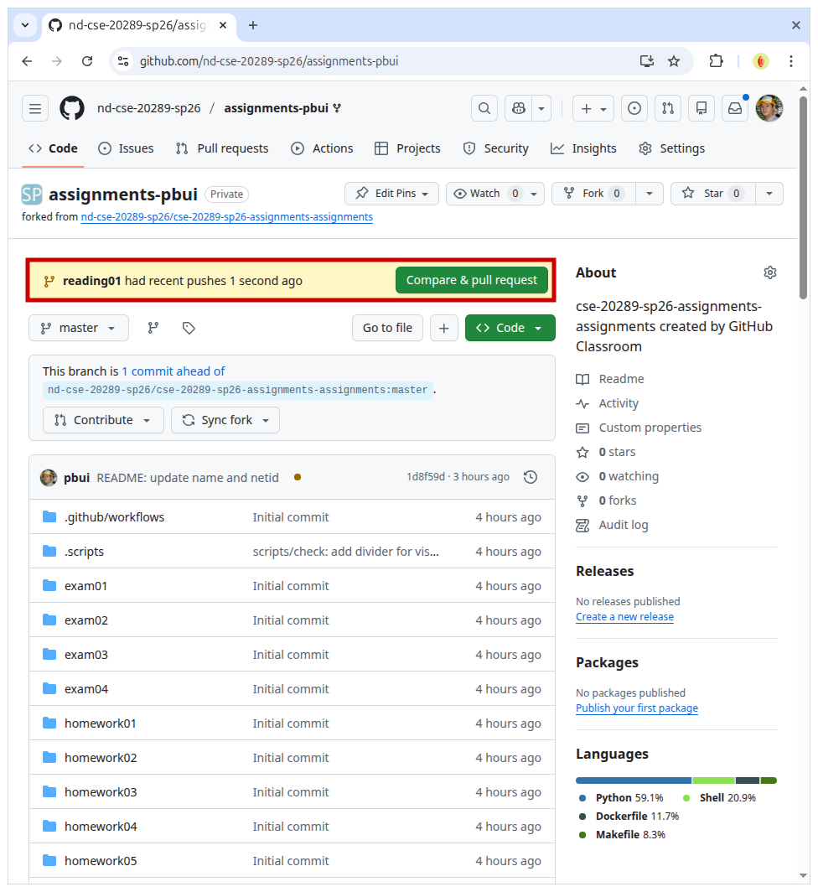
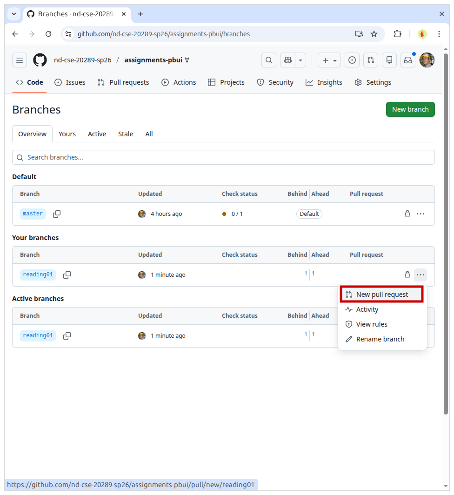
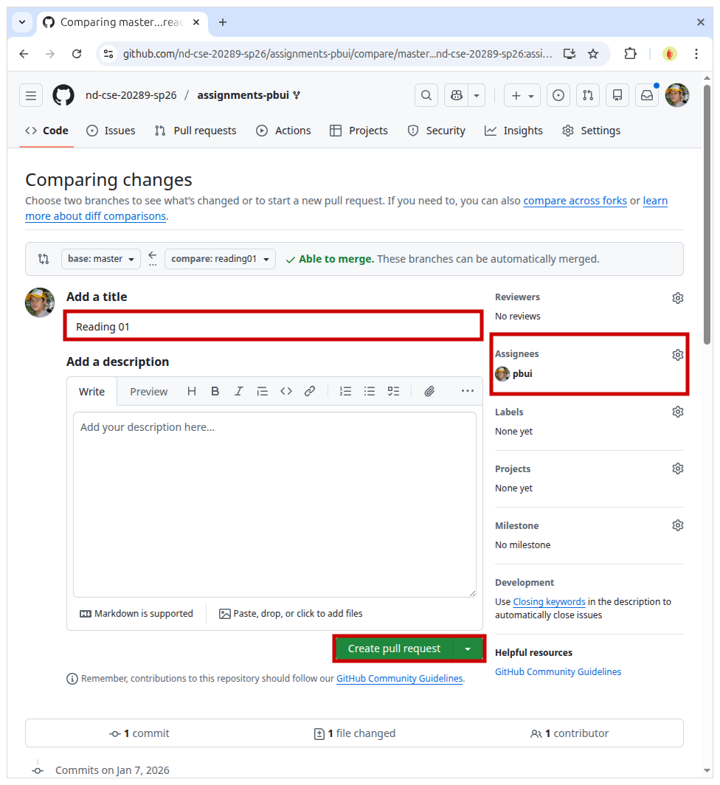
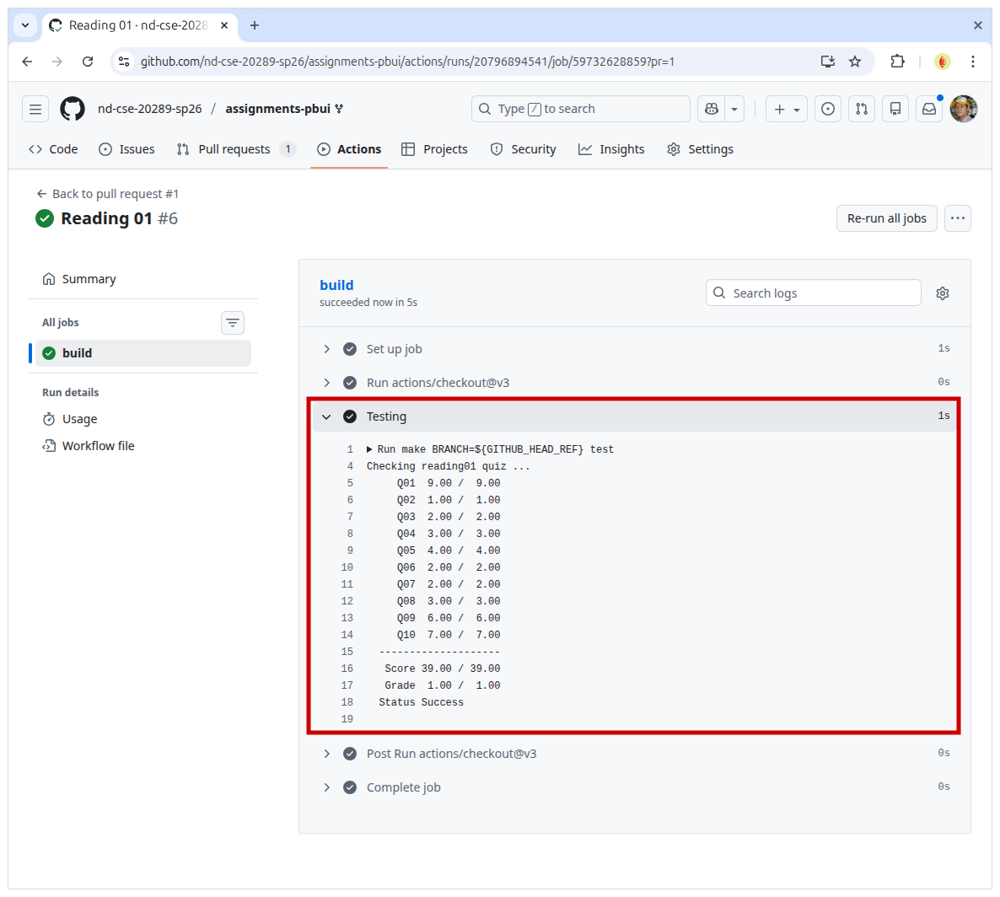

Everyone:
Next week, we will explore how to use some of the more advanced features of the Unix shell, including how to manipulate files and control processes, which are two fundamental abstractions the Unix operating system provides to the end user. You are also encouraged to learn more about a particular text editor of your choice such as vim, emacs, or nano.
TL;DR¶
The focus of this reading is to review the basics of manipulating files and processes in the Unix Shell.
Branching¶
As discussed in class, each reading and homework assignment must be completed in its own git branch; this will allow you to separate the work of each assignment and for you to use the Pull Request workflow describe at the end of this document.
To create a branch in your local repository, follow the instructions below:
$ cd path/to/cse-20289-sp26-assignments # Go to assignments repository
$ git switch master # Make sure we are in master branch
$ git pull --rebase # Make sure we are up-to-date with GitHub
$ git switch -c reading01 # Create reading01 branch and switch to it
$ cd reading01 # Go into reading01 folder
Once these commands have been successfully performed, you are now ready to add, commit, and push any work required for this assignment.
Git Branching¶
For the assignments in this class, you should always branch off the master branch. To determine which branch you are on, you can do the following:
$ git branch
To create and switch to a new branch, you can use the git switch -c
BRANCH as described above. Once you have performed this command, you can
check which branch you are on:
$ git branch
master
* reading01
To change to another existing branch, you can use the git switch BRANCH
command. Suppose you are on the reading01 branch and want to switch back
to the master branch. To do so, you can do the following:
$ git switch master
Before switching branches, however, you may wish to commit your work or at the very least stash it.
Python 3¶
Throughout the semester, we will be using Python 3 for a variety of
purposes. Because the student machines an older version of Python 3 by
default, you will need to add the following line to the bottom your
~/.bashrc file:
export PATH=/escnfs/home/pbui/pub/pkgsrc/bin:$PATH
You can then source this file to load that environment variable:
$ source ~/.bashrc
To check that Python 3 works, you can run the following:
$ python3 -V
Python 3.12.4
This will be necessary for the .scripts/check.py script in your
assignments repository.
Readings¶
The readings for Wednesday, January 21 are:
-
- Chapter 6 - Redirection
- Chapter 7 - Seeing the World as the Shell Sees it
- Chapter 8 - Advanced Keyboard Tricks
- Chapter 9 - Permissions
- Chapter 10 - Processes

In addition to reading the above chapters, it is recommended that you learn a command-line text editor such as one of the following:
nano¶
This text editor is the easiest to get started with, but also has the least amount of features. This is recommended for newcomers to Linux.
vim¶
This text editor has many features such as syntax highlighting, plugins, and even spell checking. That said, it has a steep learning curve due to its unconventional keyboard interface.
- Chapter 12 - A Gentle Introduction to Vi of The Linux Command Line
- Vim Editor in Linux
This is my editor¶
All joking aside, your exact choice in a text editor is not important. What is important, however, is that you become comfortable with at least one of them and are capable of editting text efficiently in terminal. As the creed goes:
This is my editor. There are many like it, but this one is mine.
My editor is my best friend. It is my life. I must master it as I must master my life.
Without me, my editor is useless. Without my editor, I am useless.
VS Code¶
If you are more comfortable using a graphical text editor such as Visual Studio Code, then you should consider setting up Remote development over SSH and becoming familiar with its features including its builtin terminal emulator and debugger.
That said, we do not recommend that you use the git integration or become too dependent on AI features such as CoPilot.
Optional References¶
The following are additional resources that you may find useful:
-
Quiz¶
Once you have completed the readings, answer the following Reading 01 Quiz questions:
Submission¶
To submit your answers, you will need to create an
answers.jsonfile in thereading01folder of your assignments repository:-
If you have not already, follow the instructions at the top of this document to create a
reading01branch in your assignments Git repository.You can either hand-write the
answers.jsonfile using your favorite text editor or you can use the online form to generate the JSON data, which should look like the following:{ "q01": [ "stdin", "stdout", "stderr" ], "q02": "yes", "q03": [ "a", "b" ], "q04": [ "a", "b" ], "q05": [ "ls" ], "q06": [ "beastie" ], "q07": [ "beastie" ], "q08": [ "800" ], "q09": [ "b" ], "q10": [ "homeworks" ] }To determine which symbols correspond to which response, take a look at the Reading 01 Quiz file.
To check your answers, you can use the provided
.scripts/check.pyscript:$ cd reading01 # Go into reading01 folder $ $EDITOR answers.json # Edit your answers.json file $ ../.scripts/check.py # Check reading01 quiz Checking reading01 quiz ... Q01 9.00 / 9.00 Q02 1.00 / 1.00 Q03 2.00 / 2.00 Q04 3.00 / 3.00 Q05 4.00 / 4.00 Q06 2.00 / 2.00 Q07 2.00 / 2.00 Q08 3.00 / 3.00 Q09 6.00 / 6.00 Q10 7.00 / 7.00 -------------------- Score 39.00 / 39.00 Grade 1.00 / 1.00 Status SuccessThis script will check your responses by sending your
reading01/answers.jsonfile to dredd, which is the automated grading system. dredd will take your answers and return to you a score and overall status as shown above.Note:
Scoreis how many points you received out of the maximum number of attempted points, whileGradeis the amount of normalized points that will be recorded on Canvas.Moreover,
StatusisSuccessif you have achieved full credit (otherwise, it will showFailure).Try, Try, Try again¶
You may check your quiz answers as many times as you want; dredd does not keep track of who submits what or how many times. It simply returns a score.
Once you have your
answersfile, you need to add, commit the file, and push your commits to GitHub:$ git add answers.json # Add answers.json to staging area $ git commit -m "Reading 01: Quiz" # Commit work $ git push -u origin reading01 # Push branch to GitHubIterative Approach¶
You may edit and commit changes to your branch as many times as you wish. Just make sure all of your work goes in the appropriate branch and then perform a
git pushwhen you are done.When you are ready for your final submission, you need to create a Pull Request via the GitHub interface:
-
If you have a Compare & pull request button corresponding to your
reading01branch on your repository page, then you can click on that button.
Pull Request URL¶
As an alternative, when you first do a
git pushon the command-line, git will also give you a URL that you can click to create a Pull Request.If you do not have the Compare & pull request button, then go to your repository's Branches page and then press the New pull request button for the appropriate branch:

Next, edit the Pull Request title to "Reading 01", write a comment if necessary, assign the appropriate TA from the Reading 01 TA List, and then press the "Create pull request" button.

Don't Merge!¶
DO NOT MERGE your own Pull Requests. The TAs use open Pull Requests to keep track of which assignments to grade. Closing them yourself will confuse the TAs and cause a delay in grading.
Every commit on GitHub will automatically submit your quiz or code to dredd and the results of each run is displayed in the Checks tab of each commit as shown below:

Once you have made the Pull Request, the TA can verify your work and provide feedback via the discussion form inside the Pull Request. If necessary, you can update your submission by simply commit and pushing to the appropriate branch; the Pull Request will automatically be updated to match your latest work.
Acknowledgments¶
If you collaborated with any other students, or received help from TAs or AI tools on this assignment, please record this support in the
README.mdin thereading01folder and include it with your Pull Request.Graders¶
Once you have committed your work and pushed it to GitHub, remember to create a pull request and assign it to the appropriate teaching assistant from the Reading 01 TA List.
Note: this list changes each week, so be sure to consult the appropriate list for each assignment.
-